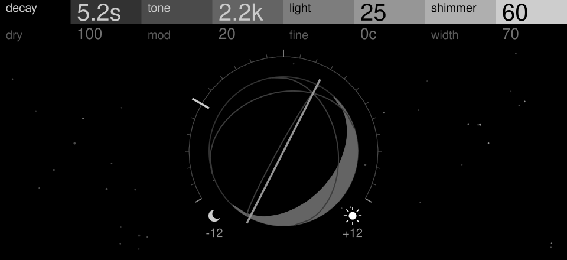
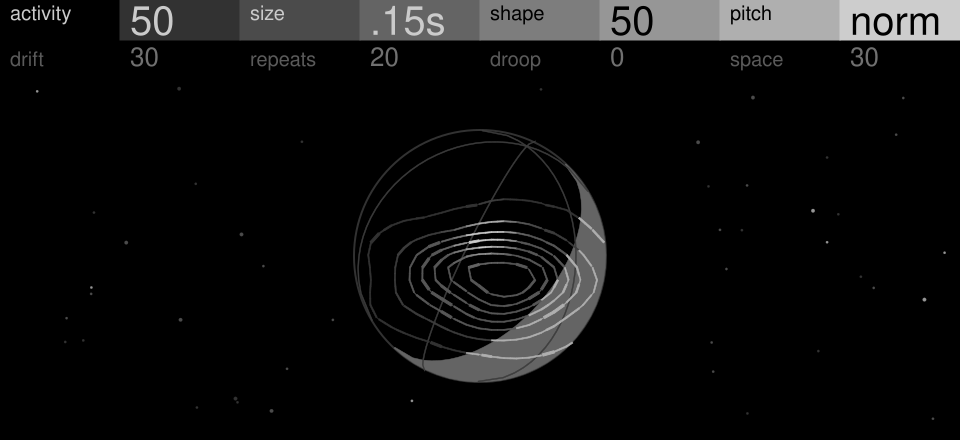
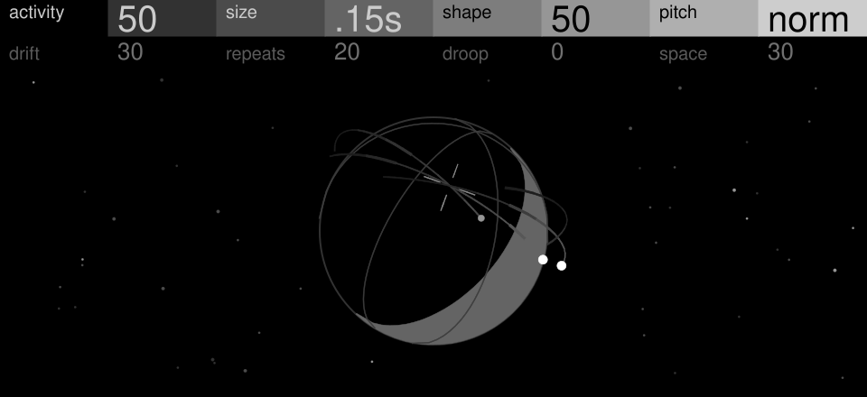
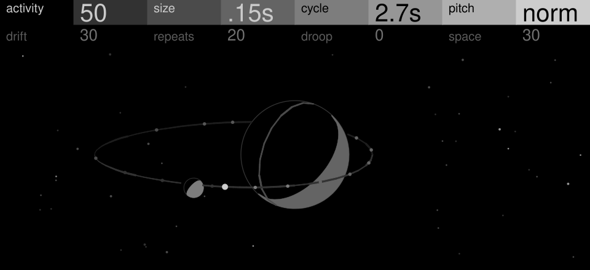
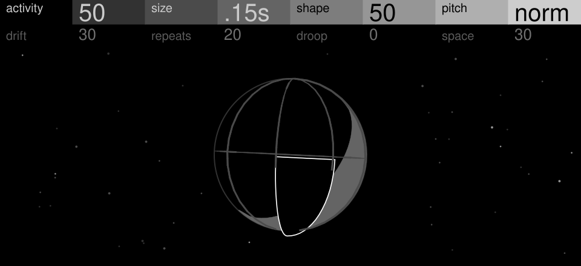

Codebrulee's Open-XY build
More sends, a performance recorder, a CPU meter that tells you which track is to blame, and two new effects for your OP-XY. A personal build of Open-XY, with features I've written and offered back to it.
Testing - use at your own risk
This isn't an official Open-XY release: for that, and its support, go to Open-XY, and report problems with this build here. Modified firmware can brick your OP-XY, so back up your projects first. You supply your own stock OS 1.2.1 os.ldr; no Teenage Engineering firmware is hosted here.
Mixing
FX III: a third send effect
The OP-XY gives you two send effects. FX III turns Aux 5 into a third, so a reverb, a delay and something stranger can all run at once.
- Turn Aux 5's Input to its top detent, send, and every track's aux send feeds it.
- Shift + Aux 5's key picks the effect: any of stock's send effects, or any in the build, Earthshine and Earthgrain included.
- It gets the effect's own page, all eight controls and its Shift row, just as FX I and FX II do. Press encoder 1 to bypass it.
- Aux 5's Level and Mix set the return, and everything is saved with the project.
Source: codebrulee/open-xy
Performance experimental
Performance recorder
Play your project live and keep the take. The recorder turns a performance into a song you can play back, edit and build on.
- Hold Record and press Arrange, then press Play.
- Switch scenes, mute and unmute tracks and play punch-in effects: it writes them all into a new song as you go.
- From the song page, press Arrange again to overdub a song you've already recorded.
- Didn't like it? Shift + Stop on the arranger or song page undoes the last take.
Confidence
CPU meter and warning
Machines are hungry, and a click in the audio rarely says which one caused it. This build tells you.
- Project > M4 > cpu shows how hard the DSP is working, its peak, and which part caused the slowest moment.
- When audio actually drops, a red cpu chip appears where a muted track's M would be, naming the culprit: track 1–8, Aux 5, tape, FX I, FX II or master. So you know what to lighten without opening a menu.
- A slow moment that still made it in time stays quiet: the warning only shows for real dropouts.
Effect · Xyphemera
Earthshine
A shimmer reverb: a warm, wide tank whose tail is pitch-shifted back into itself. Turn Light from the moon to the sun, from a sub-octave bloom under your notes to an octave climbing above them, or to a halo that rises or falls for ever.
- Decay from 1 to 20 seconds, Tone from dark to bright, and Shimmer for how much of either layer.
- On Shift: hold the shimmer back, swell it in after each note, and choose the intervals.
- The screen is the Earth with the light turning across it.
Source: codebrulee/xyphemera/earthshine

Effect · Xyphemera
Earthgrain
A granular looper that listens. It records what you play and plays it back as grains, and when you stop it holds your last phrase as a drone. Play again and the drone lets go.
- Weather scatters grains like a cloud, Satellite slows the sound without changing its pitch, Orbit spreads and gathers its grains like a spring, and Plates cuts your phrase at each note and plays the pieces back.
- Pitch sets from unison to fifths, octaves, reverse and harmonics; Repeats to let the loop evolve; Space to put it in a room.
- Lock it to the song's tempo, and choose how long a held phrase lasts.
Source: codebrulee/xyphemera/earthgrain




Getting it on your OP-XY
- Back up your projects.
- Copy
os.ldr(OS 1.2.1) off your OP-XY in file-transfer mode. - Open the builder, choose your machines and build. It patches your own
os.ldrin the browser and walks you through installing it. - To go back, install the stock OS update from Teenage Engineering.
Machines and extensions
Alongside the features above, the builder offers 44 machines and extensions from the Open-XY community. Every one belongs to its author and is used under its licence, at the version pinned in Open-XY's catalog.
| Machine | Kind | Author | Source | Licence |
|---|---|---|---|---|
| mdkit | drum | OP-XY MNMD contributors | mmockett/OP-XY-MNMD v1.3.6 | MIT |
| chroma | effect | Max Mockett | mmockett/OP-XY-ModFX v1.9.2 | MIT |
| earthgrain | effect | Codebrulee | codebrulee/xyphemera f61e02e | MIT |
| earthshine | effect | Codebrulee | codebrulee/xyphemera f61e02e | MIT |
| gentape | effect | Open-XY contributors | kristapskristaps/xy-machines gentape-v1.0.0 | MIT |
| pingpong | effect | Open-XY contributors | etcetc000/open-xy-core-machines v1.1.0 | MIT |
| ringmod | effect | Open-XY contributors | etcetc000/open-xy-core-machines v1.1.0 | MIT |
| capture | extension | Open-XY contributors | etcetc000/open-xy-core-machines v1.6.1 | MIT |
| cpu-warning | extension | Codebrulee | codebrulee/opxy-cpu-warning e0116de | MIT |
| drumline_page | extension | Max Mockett | mmockett/OP-XY-Extensions v1.0.0 | MIT |
| master_dj_filter | extension | Open-XY contributors | V714/open-xy-dj-filter v1.1.5 | MIT |
| performance-recorder | extension | Codebrulee | codebrulee/opxy-performance-recorder 7f17dc7 | MIT |
| chords | player | Open-XY contributors | etcetc000/open-xy-core-machines v1.9.1 | MIT |
| timestretch | sample | Open-XY contributors | etcetc000/open-xy-core-machines v1.7.0-rc.1 | MIT |
| achird | synth | Open-XY contributors | frankoooooooo/cassiopeia v1.0.0 | MIT |
| acidrain | synth | Open-XY contributors | frankoooooooo/acid-rain v1.0.1 | MIT |
| bend | synth | Max Mockett | mmockett/OP-XY-Hexagon v1.8.0 | MIT |
| breadboard | synth | Open-XY contributors | meemknight/OPXY-breadboard v1.1.0 | MIT |
| caph | synth | Open-XY contributors | frankoooooooo/cassiopeia v1.0.0 | MIT |
| cocoa | synth | Max Mockett | mmockett/OP-XY-Nonagon v0.10.0 | MIT |
| coin | synth | Max Mockett | mmockett/OP-XY-Nonagon v0.9.2 | MIT |
| daath | synth | SammiBabe666 | SammiBabe666/Daath-OP-XY-WitchHouse-engine 1.0 | MIT |
| drone | synth | Gokux | Gokux/opxy-machines v1.1.6 | MIT |
| fermi | synth | Max Mockett | mmockett/OP-XY-Nonagon v0.10.0 | MIT |
| fm2op | synth | Open-XY contributors | etcetc000/open-xy-core-machines v1.1.0 | MIT |
| halcyon | synth | Colors In Space | colorsinspace1/halcyon 1.3 | MIT |
| hollow | synth | Max Mockett | mmockett/OP-XY-Hexagon v1.8.0 | MIT |
| karplus | synth | Open-XY contributors | etcetc000/open-xy-core-machines v1.10.0 | MIT |
| matrixy | synth | frankoooooooo | frankoooooooo/matrixy v1.0.2 | MIT |
| mmpar | synth | OP-XY MNMD contributors | mmockett/OP-XY-MNMD v1.3.5 | MIT |
| mmsid | synth | OP-XY MNMD contributors | mmockett/OP-XY-MNMD v1.3.5 | MIT |
| mmvo6 | synth | OP-XY MNMD contributors | mmockett/OP-XY-MNMD v1.3.0 | MIT |
| moth | synth | Max Mockett | mmockett/OP-XY-Hexagon v1.7.3 | MIT |
| navi | synth | Open-XY contributors | frankoooooooo/cassiopeia v1.0.0 | MIT |
| nexus | synth | Max Mockett | mmockett/OP-XY-Nexus v1.0.0 | MIT |
| nightdrive | synth | Open-XY contributors | V714/open-xy-nightdrive v1.0.3 | MIT |
| omnifilter | synth | Max Mockett | mmockett/OP-XY-ModFX v1.9.2 | MIT |
| orbit | synth | Max Mockett | mmockett/OP-XY-Hexagon v1.7.2 | MIT |
| papasrapa | synth | Gokux | Gokux/opxy-machines v1.1.6 | MIT |
| reaction | synth | Open-XY contributors | frankoooooooo/reaction v1.0.0 | MIT |
| ruchbah | synth | Open-XY contributors | frankoooooooo/cassiopeia v1.0.0 | MIT |
| schedar | synth | Open-XY contributors | frankoooooooo/cassiopeia v1.0.0 | MIT |
| segin | synth | Open-XY contributors | frankoooooooo/cassiopeia v1.0.0 | MIT |
| sift | synth | Open-XY contributors | kristapskristaps/xy-machines collection-v1.0.0 | MIT |
| tattva | synth | Colors In Space | colorsinspace1/tattva 1.02 | MIT |
| vader | synth | Open-XY contributors | kristapskristaps/xy-machines vader-v1.1.0 | MIT |
| wander | synth | Colors In Space | colorsinspace1/wander 1.0 | MIT |
| wane | synth | Max Mockett | mmockett/OP-XY-Hexagon v1.8.0 | MIT |